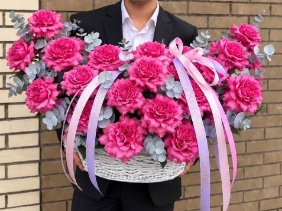
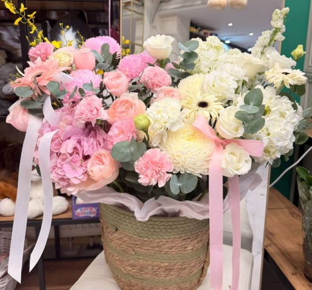

Our Flowers
Flowers and Bouquets
Flowers have a unique way of speaking when words are not enough. Whether you are celebrating a joyful milestone, expressing love, or offering comfort during difficult times, a thoughtfully arranged bouquet carries meaning that lasts far beyond the moment it is given. Our collection features fresh, hand-picked blooms sourced from trusted local and international growers, ensuring every stem is vibrant, fragrant, and long-lasting. From classic roses that symbolize timeless romance to cheerful sunflowers that bring warmth and energy into any room, we offer a wide variety of flowers to suit every occasion and personal style. Our skilled florists take pride in combining colors, textures, and seasonal varieties to craft bouquets that feel both elegant and personal. Whether you need a simple gesture of appreciation, a grand centerpiece for a wedding, or a comforting arrangement for a loved one, we are here to help you find the perfect match. Each bouquet is carefully wrapped and prepared with attention to detail, so it arrives looking as beautiful as the moment it was created. Explore our selection below and discover the perfect flowers to express exactly what you feel.
Popular Choices
- ROSES
- PEONIES
- TULIPS
| Bouquet | Flowers | Size | Price |
|---|---|---|---|
| "Wow-factor" premium bouquet | Peonies, Peony-flowered spray roses, Hydrangeas, Eustomas | Medium | 56.000 |
| Pink Delight – Premium Bouquet | spray roses, peony-style spray roses,lush hydrangeas | Large | 106.000 |
Sweet Flowers provides FA services.
Our Popular bouquets


Flower Types
- Roses
- Pink roses
- White roses
- Tulips
- Pink tulips
- White tulips
- Peonies
- Pink peonies
- White peonies
How to Choose a Bouquet
- Choose the flowers.
- Choose the bouquet size.
- Check the price.
Flower Terms
- Bouquet
- A group of flowers arranged together.
- Florist
- A person who works with flowers and creates arrangements.
We also offer SDD.